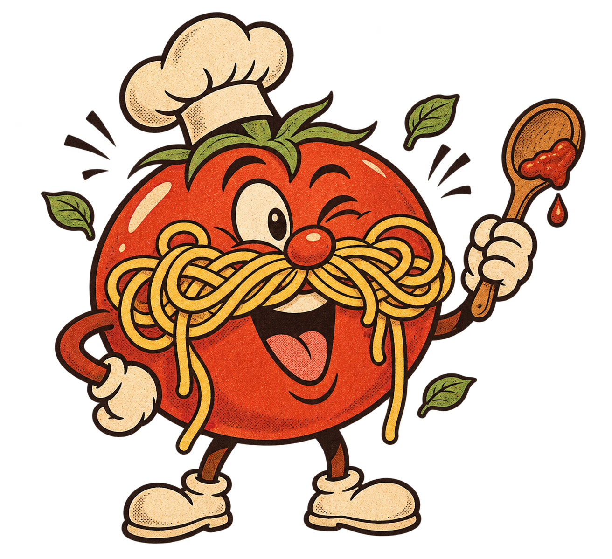

Sauce Boss is a funny kitchen apron print idea built around a cheerful tomato chef, a spaghetti moustache, and a wooden spoon. Warm tomato red, basil green, and creamy highlights keep the artwork easy to read against the VIBEYA apron’s black fabric.
A funny custom cooking apron with a tomato chef
The compact character graphic gives this custom cooking apron a lighthearted look for pasta nights, meal prep, and home cooking. It is also a playful apron gift idea for someone who loves to cook. The print is placed on the upper front bib; the apron pockets and lower section remain clear.

Designed around the VIBEYA custom apron
The VIBEYA Custom Prompt-Designed Apron is black and one size, with an adjustable neck strap and three divided pockets. It is made from 100% polyester at 180 GSM and measures approximately 80 × 70 cm. This example uses the product’s front-bib print area only; it is not an all-over apron print.
Personalize a kitchen apron online
Visit VIBEYA’s design studio, choose the custom apron, and personalize the character, colors, or joke. You can upload an image or describe a new design with a text prompt, then review the front-bib preview before placing your order.
- Choose the black custom apron in the design studio.
- Enter a prompt for a new kitchen apron design or adapt the Sauce Boss idea.
- Check the front-bib placement and product preview before ordering.
Create a funny, colorful tomato chef character for the upper front bib of a black kitchen apron. Give the round red tomato a tiny chef hat, a goofy spaghetti moustache, small basil leaves, and a wooden spoon. Use warm cream highlights, tomato red, basil green, and crisp dark outlines. Keep the design centered and compact, with no words, logo, or background. Leave the three-section apron pocket and the rest of the apron plain black.
Make a personalized apron that feels like yours
Looking for a personalized apron for your own kitchen or a funny cooking gift? Use this tomato-chef print as a starting point, create a different character or message, and see your custom apron design on the actual product preview before you order.
Frequently asked questions
Where does the Sauce Boss print go?
The sample artwork is shown on the upper front bib of the apron. The divided pocket and lower apron stay plain.
Can I change the artwork for my custom apron?
Yes. Describe a different character, colors, or wording in VIBEYA’s design studio, then review the preview on the selected apron.
What are the apron’s main features?
The black, one-size apron has an adjustable neck strap, three divided pockets, and a 100% polyester construction at 180 GSM.